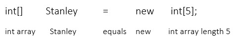

| Array Intialization | Swapping Elements | The length Parameter of Arrays |
| Using For Loops with Arrays | Example Program - ArrayMaker | Applications of Arrays |
| Storing Data | Resizing | Search |
An array is a set of variables that are all of the same type. Suppose we want a program to store three numbers entered by a user. In the code below, three variables are created to hold numbers.
double number 0; double number 1; double number 2;
number0 = keyboard.nextDouble(); number1 = keyboard.nextDouble(); number2 = keyboard.nextDouble();
Rather than create three separate variables, we should create an array that holds three doubles, and store numbers in the array.
double[] number = new double[3];
number[0] = keyboard.nextDouble(); number[1] = keyboard.nextDouble(); number[2] = keyboard.nextDouble();
You can make an array of any type, including both primitives and class types. To create an array, you need to know 3 things.
What type the array will hold (int, double, String...)
What you would like to call the array
How many elements the array will hold
The statement below creates an int array named stanley that can hold five ints

We refer to the items in the array as elements. We access the elements of the array by using an index. The index is an int that represents a particular element in the array. The first element in every array is at index 0. To access a particular element in an array, the index is placed in square brackets after the array name.
stanley[0] = 5; stanley[1] = 3; stanley[2] = 1; stanley[3] = 7; stanley[4] = 2;
Note that while stanley is an int array, stanley[0] is an int. Each element of an array can be used in the same way as a variable.
stanley[1] = stanley[0]; stanley[2] = stanley[1] - 1; stanley[3] = stanley[1] + stanley[2]; stanley[4] = stanley[4] + 1;
Since stanley was created as a length 5 array Stanley can hold 5 elements. Notice that the highest index (4 in this case) is one less than the array length (5 in this case). The element stanley[5] does not exist. It is a common programming error to try to access a non-existent element. If, at runtime, the program attempts to use a negative index, or an index that is greater than or equal to the array length, an ArrayIndexOutOfBounds exception will be thrown and the program will terminate.
In the example program below, the user is asked to enter three numbers. The program adds the numbers and prints the sum.
import java util.Scanner; public class Adder { public static void main (String[] args) Scanner keyboard = new Scanner(System.in); double[] number = new double[3]; double sum = 0; System.out.println("Enter first number"); number[0] = keyboard.nextDouble(); System.out.println("Enter a second number"); number[1] = keyboard.nextDouble(); System.out.println("Enter a third number"); number[2] = keyboard.nextDouble(); sum = number[0] + number[1] + number[2]; System.out.println("The sum is " + sum); } }
The values stored in an array must be of the proper type. However the index value used to access an element of any array must be an integer. An expression may be used as long as it reduces to an int.
number[0]; number[i]; number[3 + x * (11 - y)];
By default, all elements in an array are intialized to zero.
In the case of primitives, the zero value is interpreted as normal.
| int | 0 |
| double | 0.0 |
| boolean | false |
| char | \0 the (ASCII null character) |
In the case of an object variable, such as String or Scanner, a value of 0 is called a null pointer, and it means the variable is not pointing to any object. If you try to call a method on a variable that is a null pointer, a NullPointerException will be thrown and the program will exit.
An array can be created and initialized with a constant array in one statement. A constant array is denoted with curly braces. The elements are values (constants, variables or expressions) of the proper type for the array separated by commas. A new array variable can be initialized to the values in a constant array by using the assignment operator. This creates a new array and copies the values into it. An array can only be initialized in this way when the array variable is created.
int[] array = {5, 7, 34, 18, 734}; double[] array2 = {5.4, 6.8, 4.386, 1}; boolean[] array3 = {true, true, true, false, true, false}; char[] array4 = {'a', 'b' , 'c' , 'd', 'e', 'f', 'g', 'h'} String[] array5 = {"Red", "Yellow", "Blue"};
The array will be created with the same size as the constant array assigned to it. For example, the first line creates an int array of length 5 to hold 5 numbers in the constant array. The last line creates a String array with the length of 3 to hold the String "Red", "Yellow", and "Blue".
A common array task is swapping two elements. That is, exchanging the locations of two elements.
The picture above shows the second element (index 1) swapped with the fourth element (index 3). To swap the element values, we would like to do something like this:
array[1] = array[3]; //This won't work array[3] = array[1];
But this will not work. When the first line assigns the value at the index 3 (14) to index 1, the old value at index 1 (26) is lost.
As an analogy, suppose you have a glass full of red water and a glass full of blue water, and want to swap the contents of the glasses. That is, you want to put the red water in the blue glass and vice-versa. If you try to pour the red water into the blue glass, the blue water needs to be poured out. You need an extra glass to hold the blue water temporarily until the red glass is empty. Likewise, to swap array elements, we need to create a variable to hold one of the values temporarily.
The example below creates and intializes an array, and swaps the elements at indices 1 and 3.
int[] array = {3, 26, 8, 14,49}; int temp = 0; temp = array[1]; array[1] = array[3]; array[3] = temp;
There are times when we want to know the length of an existing array. The length of any array can be accessed by the following the array name with a period and the word length.
int[] smallArray = new int[8]; System.out.println("The length of the array is " + smallArray.length);
When dealing with arrays, there are often times we want to do the same thing to each element. If we use the for loop variable as the array index, we can access all elements in order by writing the code to access one general element.
For example, suppose we want to set all the elements in an array called "value" to 1. Without using a loop, the code would look like this.
value[0] = 1; value[1] = 1; value[2] = 1; ...
This is obviously a problem if the array is too large, or if we don't know the size of the array in advance. But if we write a more general statement for the ith element, rather than for a specific element,
value[i] = 1;
we can put the statement insode a for loop, and the loop will set every element in the array.
for(int i = 0; i < value.length; i++) { value[i] = 1; }
As the example program shows below, for many array processing tasks, a for loop is used.
This program creates an array of ints It prompts the user to enter the size of the array before creating it. The program then uses a for loop to assign data to each element from the keyboard. A third for loop ia used to print the new element values. Finally, the fourth for loop sums the values in the array.
import java.util.Scanner; public class ArrayMaker { public static void main (String[] args) { Scanner keyboard = new Scanner(System.in); int input = 0; int total = 0; int i = 0; System.out.println("How big should the array be?"); input = keyboard.nextInt(); int[] value = new int [input]; //Prints default values for(i = 0; i < value.length; i++) { System.out.println("value " + i + " is " + value[i]); } //Assigns new values for(i = 0; i < value.length; i++) { System.out.println("Enter new value " + i); value[i] = keyboard.nextInt(); } //Prints new values for(i = 0; i < value.length; i++) { System.out.println("value " + i + " is " + value[i]); } // Add all values and print sum for(i = 0; i < value.length; i++) { total = total + value[i]; System.out.println("The sum is " + total); } } }
Notice that the program is written in a modular fashion. Each code block performs one function, and sets up things for the next block.
As with while loops, the flow diagram symbol for a for loop is a diamond. When the loop condition is true. the program flow loops back to the diamond. The diagram below depicts a summing algorithm.
Once again, most array processing can be done using a for loop to step through the elements. As always, the examples below are not the only ways to solve each problem.
The code below calculates the sum of the elements in an array called value. An int called total is created and initialized to 0. Each pass through the loop, an element is added to the total, and the result is stored in total. When the loop ends, the value of total is the sum of the array elements. This value might be the program output, or it might be used in a following block of code.
for (i = 0; i < value.length; i++) { total = total + value [i]; }
When we don't know how many times a loop will repeat before the loop starts, a while loop is a better choice than a for loop. Suppose we want a program to store an unknown number of values entered by a user. To hold the values, we create an array that is larger than we will need. We also need a variable to count the number of values entered.
int value = new int[100] Scanner input = new Scanner(System.in); int userInput = -1; int count = 0; while(userInput != 0) { System.out.println("Enter a value (0 to quit):"); userInput = input.nextInt(); if(userInput != 0) { value[count] = userInput; count++; } }
Once an array has been created, its size can not change. If we need to resize an array, we make a new array of the desired size, and copy the old array values into it. We can then point our old reference variable to the new array if we like. In the last example, we were left with a partially filled array. Suppose we want to move our data to an array that is just the right length. The code below creates a new array with a length of count. A for loop is used to copy the values from the original array, value, to the new array, valueB. Finally, the array pointed to by valueB is assigned to the variable value. The result is that the array value now contains the same values, but has been resized to fit the data.
int[] valueB = new int [count]; for (i = 0; i < count; i++) { valueB [i] value [i]; } value = valueB ;
To search an array for a particular item, loop through the array and compare each element to the value sought. In the example below, a variable called key holds the value we are searching for. Another variable called index is created and initialized to -1 .
int key = 7; int index = -1 for (i = 0; i < value.length; i++) { if (value [i] == key) { index = i; } }
If an element in the array has the same value as key, the index of that element is stored in index. If the key is found again, index is set to the new index, so this algorithm finds the last index holding the key in the array. If index is still -1 when the loop ends, the key was not found.